Some functions of the accessibility package, such as
floating_catchment_area() and gravity(), use
decay functions to continuously discount the weight of opportunities as
travel costs become larger. For convenience, the package ships with some
of the most frequently used functions in the accessibility literature,
which are discussed below. Additionally, users can pass custom functions
to convert travel costs into weights to be applied to the opportunities,
which is discussed further down in this the vignette.
Currently available decay functions
Binary
Also known as the step decay function, it’s most commonly used in cumulative opportunities measures.
Where is the travel cost between origin i and destination j, and is the travel cost cutoff.
Linear
Weights decay linearly until the travel cost cutoff is reached. From this point onward weights assume the value of 0.
Where is the travel cost between origin i and destination j, and is the travel cost cutoff.
Negative exponential
Where is the travel cost between origin i and destination j, and is the parameter that tells the speed of decay.
Inverse power
Where is the travel cost between origin i and destination j, and is the parameter that tells the speed of decay.
Stepped
Similar to the binary function, but can take an arbitrary number of steps. The current implementation assumes that values changes at each step, instead of right after it.
Where is the travel cost between origin i and destination j, is the total number of steps, is the travel cost cutoff that delimits the step, and is the value that the decay function assumes at the step.
Logistic
Weights decay sigmoidally, according to a reversed cumulative logistic curve. Currently, the function implements a logistic distribution parameterized with the cutoff that sets its inflection point and the standard deviation that sets its steepness, according to the logistic decay curve proposed by Bauer and Groneberg (2016). Standard deviations values near 0 result in weighting curves that approximate binary decay, while higher values tend to linearize the curve.
Where is the travel cost between origin i and destination j, is the distribution inflection point, and is the distribution standard deviation.
Quick demonstration
All decay functions (decay_*()) take decay parameters as
input and return a function as output. This output function, in turn,
takes a vector of numeric values as input, the travel costs, and returns
a list of numeric vectors as output. Since the decay function can take
multiple decay parameters as input, each element of the output list
refers to the opportunities weights calculated with one of these decay
parameters.
Let’s check this behavior with an example. With the code snippet below, we calculate the opportunities weights for the same travel costs, but using different negative exponential decay values (0.2 and 0.3):
library(accessibility)
output_fn <- decay_exponential(c(0.2, 0.3))
output_fn(c(10, 15, 20))
#> $`0.2`
#> [1] 0.13533528 0.04978707 0.01831564
#>
#> $`0.3`
#> [1] 0.049787068 0.011108997 0.002478752decay_stepped(), as the only decay function that takes
more than one argument (both steps and
weights) names the output elements after the combination of
steps and weights:
stepped_output <- decay_stepped(
steps = list(c(10, 20, 30), c(10, 20, 30, 40)),
weights = list(c(0.67, 0.33, 0), c(0.75, 0.5, 0.25, 0))
)
stepped_output(c(15, 25, 35, 45))
#> $`s(10,20,30);w(0.67,0.33,0)`
#> [1] 0.67 0.33 0.00 0.00
#>
#> $`s(10,20,30,40);w(0.75,0.5,0.25,0)`
#> [1] 0.75 0.50 0.25 0.00With the code below, we demonstrate each decay function with travel costs ranging from 1 to 100:
library(data.table)
library(ggplot2)
binary <- decay_binary(cutoff = 50)
linear <- decay_linear(cutoff = 50)
negative_exp <- decay_exponential(decay_value = 0.2)
inverse_power <- decay_power(decay_value = 0.2)
stepped <- decay_stepped(steps = c(30, 60, 90), weights = c(0.67, 0.33, 0))
logistic <- decay_logistic(cutoff = 50, sd = 10)
travel_costs <- seq(1, 100, 0.1)
weights <- data.table(
minutes = travel_costs,
binary = as.numeric(binary(travel_costs)[["50"]]),
linear = linear(travel_costs)[["50"]],
negative_exp = negative_exp(travel_costs)[["0.2"]],
inverse_power = inverse_power(travel_costs)[["0.2"]],
stepped = stepped(travel_costs)[["s(30,60,90);w(0.67,0.33,0)"]],
logistic = logistic(travel_costs)[["c50;sd10"]]
)
# reshape data to long format
weights <- melt(
weights,
id.vars = "minutes",
variable.name = "decay_function",
value.name = "weights"
)
ggplot(weights) +
geom_line(
aes(minutes, weights, color = decay_function),
show.legend = FALSE
) +
facet_wrap(. ~ decay_function, ncol = 2) +
theme_minimal()
Using a custom decay function
accessibility also allows you to use a custom decay
function, instead of one of the functions shipped with the package. A
valid decay function is one that takes a numeric vector of
travel costs as input and returns either:
- A
numericvector of weights, with the same length of input, or; - A named
listofnumericvectors to be used as weights, each one with the same length of input.
Let’s check the difference between each case with an example. Suppose we want to use a very simple decay function that defines the weights as the multiplicative inverse of travel cost - i.e. . We just have to take care of the case when travel cost is less than 1, in which case the function would return values greater than 1 and which we will replace with 1, but otherwise the implementation is pretty simple:
my_decay <- function(travel_cost) {
weights <- 1 / travel_cost
weights[weights > 1] <- 1
return(weights)
}Given a numeric vector of travel costs, the function
returns a numeric vector of weights:
my_decay(c(0, 0.5, 1, 2, 5, 10))
#> [1] 1.0 1.0 1.0 0.5 0.2 0.1Using this function to calculate accessibility is as easy as any of the built-in decay functions:
data_dir <- system.file("extdata", package = "accessibility")
travel_matrix <- readRDS(file.path(data_dir, "travel_matrix.rds"))
land_use_data <- readRDS(file.path(data_dir, "land_use_data.rds"))
custom_gravity <- gravity(
travel_matrix,
land_use_data,
opportunity = "jobs",
travel_cost = "travel_time",
decay_function = my_decay
)
head(custom_gravity)
#> id jobs
#> <char> <num>
#> 1: 89a88cdb57bffff 11210.42
#> 2: 89a88cdb597ffff 10775.77
#> 3: 89a88cdb5b3ffff 11480.25
#> 4: 89a88cdb5cfffff 12689.44
#> 5: 89a88cd909bffff 11361.66
#> 6: 89a88cd90b7ffff 12563.65Great! But now suppose we want to change this function a bit. Instead
of the simple multiplicative inverse of the travel cost, we want to
multiply this inverse by a given decay parameter. Now we face a
“problem”: our function would need to take two inputs (the travel cost,
as above, and the decay parameter to multiply the travel cost), but
gravity() can only take functions that receive a single
input (the travel cost). In this case, we resort to the same strategy
used in the decay functions shipped with the package, we create a
function that takes a decay parameter as input and returns a function
that takes travel cost input as output:
my_second_decay <- function(decay_parameter) {
function(travel_cost) {
weights <- 1 / (decay_parameter * travel_cost)
weights[weights > 1] <- 1
return(weights)
}
}
output_fn <- my_second_decay(2)
output_fn(c(0, 0.5, 1, 2, 5, 10))
#> [1] 1.00 1.00 0.50 0.25 0.10 0.05
# compare to the first custom decay function
my_decay(c(0, 0.5, 1, 2, 5, 10))
#> [1] 1.0 1.0 1.0 0.5 0.2 0.1Great, it works! In fact, we can achieve the exact same
gravity() result shown above if we use
my_second_decay(1), instead of my_decay:
second_custom_gravity <- gravity(
travel_matrix,
land_use_data,
opportunity = "jobs",
travel_cost = "travel_time",
decay_function = my_second_decay(1)
)
head(second_custom_gravity)
#> id jobs
#> <char> <num>
#> 1: 89a88cdb57bffff 11210.42
#> 2: 89a88cdb597ffff 10775.77
#> 3: 89a88cdb5b3ffff 11480.25
#> 4: 89a88cdb5cfffff 12689.44
#> 5: 89a88cd909bffff 11361.66
#> 6: 89a88cd90b7ffff 12563.65A small difference is that in the first example we passed
my_decay (the function object) to the
decay_function parameter, whereas in the second we passed
the function call my_second_decay(1). That’s
because my_second_decay() (and the built-in decay functions
as well) is actually a function “factory”: it’s a function that returns
a function.
decay_power(1)
#> function (travel_cost)
#> {
#> weights_list <- lapply(decay_value, function(x) {
#> weights <- travel_cost^(-x)
#> weights[weights > 1] <- 1
#> weights
#> })
#> names(weights_list) <- decay_value
#> return(weights_list)
#> }
#> <bytecode: 0x563420076550>
#> <environment: 0x563425094eb0>What if we want our custom function to take many decay parameters as
inputs, just like the built-in decay functions? In this case, our output
function has to return a list of numeric
weights named after the decay parameters we have set:
my_third_decay <- function(decay_parameter) {
function(travel_cost) {
weighting_list <- lapply(
decay_parameter,
function(x) {
weights <- 1 / (x * travel_cost)
weights[weights > 1] <- 1
return(weights)
}
)
names(weighting_list) <- decay_parameter
weighting_list
}
}
output_fn <- my_third_decay(c(1, 2))
output_fn(c(0, 0.5, 1, 2, 5, 10))
#> $`1`
#> [1] 1.0 1.0 1.0 0.5 0.2 0.1
#>
#> $`2`
#> [1] 1.00 1.00 0.50 0.25 0.10 0.05
# compare to the first and second custom decay functions
my_decay(c(0, 0.5, 1, 2, 5, 10))
#> [1] 1.0 1.0 1.0 0.5 0.2 0.1
my_second_decay(2)(c(0, 0.5, 1, 2, 5, 10))
#> [1] 1.00 1.00 0.50 0.25 0.10 0.05This new custom decay function is a bit more complex than the
previous two, yet much more powerful. We can use it in conjunction with
gravity() (and the other accessibility functions that take
decay functions as input as well) to calculate the accessibility with
multiple decay parameters in a single call:
third_custom_gravity <- gravity(
travel_matrix,
land_use_data,
opportunity = "jobs",
travel_cost = "travel_time",
decay_function = my_third_decay(c(1, 2))
)
third_custom_gravity
#> id decay_function_arg jobs
#> <char> <num> <num>
#> 1: 89a88cdb57bffff 1 11210.421
#> 2: 89a88cdb597ffff 1 10775.769
#> 3: 89a88cdb5b3ffff 1 11480.254
#> 4: 89a88cdb5cfffff 1 12689.441
#> 5: 89a88cd909bffff 1 11361.664
#> ---
#> 1792: 89a881acda3ffff 2 5621.512
#> 1793: 89a88cdb543ffff 2 7406.822
#> 1794: 89a88cda667ffff 2 5947.782
#> 1795: 89a88cd900fffff 2 4565.564
#> 1796: 89a881aebafffff 2 0.000When we create our own custom decay function, we don’t have to think about general cases, just the cases that matter for us. Creating a simple function that converts one vector into another, therefore, might be enough, given our needs. If, however, you’re testing a new decay function and you want to check its sensitivity to different decay parameters, for example, you might be better off developing a decay function that can take many decay values as inputs and returns a list of weight vectors as output.